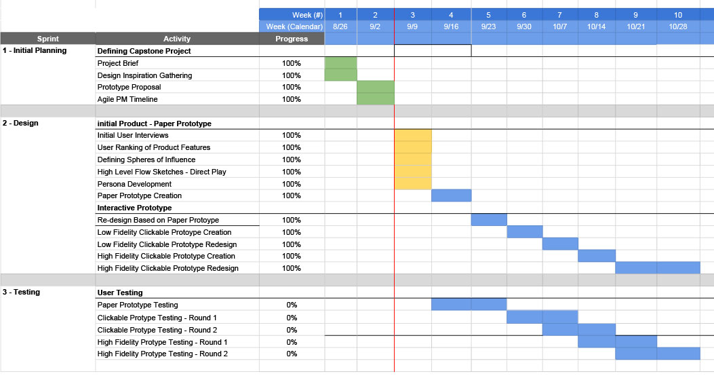

Supplemental Material
External Sources
- Cellphone Food-Ordering Hits Fenway. (2003). Wall Street Journal. Retrieved from http://online.wsj.com/article/SB105848135918298600.html.
- Coates, D.C., & Humphreys, B.R. (2007). Ticket prices, concessions and attendance at professional sporting events. International Journal of Sport Finance, 2(3), 161-170.
- Sweet, Ryan. (2013) Increasing Concession Revenue through Mobile Devices: Ralph Wilson Stadium Offering In-Seat Food Service. St John Fisher College.
Agile Project Plan

Spacer
Initial User Interviews
Spacer
Initial User Interviews
Initial User Interviews
I began the background research for my application by briefly interviewing potential users on their experience with ordering food outside of a stadium and what they would need from an application to make ordering within a stadium easier.
1. Dan 26 years old, attends an average of one stadium event per month.
● What would you need from an application in order that would help you order food while in a stadium?
○ All the available options, I'd want to pay via credit card or apple pay.
○ I'd like to know how long the order would take, especially if it would be a long wait. If there's an added fee that could be helpful to know upfront.
● What experience do you have with ordering food delivery? Who in your opinion does it best?
○ I use Uber Eats the most. I think it does a good job of letting me track the order and it makes the selection process from available restaurants easy.
● Would you be more likely to order food or drinks if you could do it from your phone? Would you be willing to pay an additional fee for this service?
○ I think I would be. Obviously if there is a good time to get up I'd rather do that and save money but it would be a nice option.
2. Steph 63 years old, attends an average of one stadium event per quarter.
● What would you need from an application in order that would help you order food while in a stadium?
○ I would want some explanation on how the process works - would it be by seat number or would they meet me somewhere?
○ A menu for the concessions I could order. Is it a fixed menu or broken up by locations?
○ I would need pricing info too.
● What experience do you have with ordering food delivery? Who in your opinion does it best?
○ I've used Uber eats. It connect with the credit card I have in there and they are usually pretty quick.
● Would you be more likely to order food or drinks if you could do it from your phone? Would you be willing to pay an additional fee for this service?
○ I would. I think I would be willing to pay more, I'm usually set on paying extra for stadium food regardless.
3. Scott, 42 years old, attends an average of one stadium event per month.
● What would you need from an application in order that would help you order food while in a stadium?
○ I'd need to be able to put together a group order. We usually end up getting something for everyone. If we go up for concessions we'll typically end up going to a few different stands so if I could put an order in for multiple locations that would be great.
○ Pricing and some way to get a time estimate on the order is big for me.
● What experience do you have with ordering food delivery? Who in your opinion does it best?
○ I always like when places have the order tracker. The dominoes website is great for showing you what stage the order is in. If I could know when someone has picked up the concessions and is on the way that would be a nice notification.
● Would you be more likely to order food or drinks if you could do it from your phone? Would you be willing to pay an additional fee for this service?
○ I would. I definitely tend to care more about the game than my kids so while they don't mind missing time I'd much rather have it brought down. Would the fee be a flat, per order delivery fee or a percentage? That would change how I'd order. I'm willing to pay more but at some point all the extras add up during events.
4. Sonya
● What would you need from an application in order that would help you order food while in a stadium?
○ I would require that it is compatible with my mobile phone (iOs) platform.
○ Also, the app should be intuitive and easy for me to figure out - I'm the type of person that does not like to read instructions,
○ I'd rather fumble around and figure it out. So easy to use interface would be ideal. Also, I'd love for the ability to have the app pre-populate my seat location and/or provide a way for me to confirm that.
● What experience do you have with ordering food delivery? Who in your opinion does it best?
○ I have recently started using a lot more apps to order food online. I do not use apps like UberEats or Doordash however I do use mobile apps to order for pick up a lot. So far, Jimmy John's is one of my favorite along with Panera. Also, my niece loves McDonalds - and due to her allergies I tend to order in store vs through the drive through. I like McDonald's in-restaurant self-service kiosks, it's really user-friendly. I love the ability to customize my order. And it's easy to figure out how to pay. I'm also a Starbucks fan but I have a love/hate relationship with their app. It works great for mobile ordering when I have my favorites - however whenever I go to include a coworker's or friend's drink - it can be a bit fickle sometimes. I love how well Starbucks has integrated their rewards program into their app. Idea - what if your stadium app gave rewards or offers based on order amount or order frequency, etc. - geared towards customer loyalty building.
● Would you be more likely to order food or drinks if you could do it from your phone? Would you be willing to pay an additional fee for this service?
○ Yes, the ability to use my phone and an online pay service like (Apple Pay, Venmo, Paypal) would definitely incent me to order food via an app if it was available. Ha! For convenience and avoidance of standing in a long line - yes, I would pay the convenience fee for the service. It's no different than being able to purchase a movie ticket online.
5. Betsy
● What would you need from an application in order that would help you order food while in a stadium?
○ I would like an easy way to find food options and the ability to use apple pay or some other digital payment like that, if it was an app just for the vendors walking through the stands then contactless payment would be a must.
● What experience do you have with ordering food delivery? Who in your opinion does it best?
○ I love the jimmy johns app and now that they added rewards it is even better, also like Sonya said the starbucks app is great for single ordering ahead of time for pickup at the location but organizing multiple people's orders would be something to pay attention to and making that UI understandable would be a must because for the Twin's games that I have been to for example groups of people usually send 1or 2 people up to wait in line and they bring back as much as they can hold etc.
● Would you be more likely to order food or drinks if you could do it from your phone? Would you be willing to pay an additional fee for this service?
○ This is kind of a hard question because being at the game and going up to concessions and waiting in line to get your hot dog and beer can be fun sometimes but I could see an app being very handy for the die hards who are there for the game and only the game and don't want to miss any of the action. For me personally I like the experience of the game and if I miss a bit then its not a big deal to go get something to drink or eat but would I think would be amazing is if the vendors walking through seats had a cc or contactless payment option because not many people carry cash anymore.
6. Briana
● What would you need from an application in order that would help you order food while in a stadium?
○ Cashless! Seems like a no-brainer, but I neverrrr have cash with me and hate having to draw it out of the ATM at the stadium, so this would be huge. You cited Venmo in your Project Brief - I use that app probably daily and love the interface and UX of it. It'd be sweet to have something similar to use at stadiums.
● What experience do you have with ordering food delivery? Who in your opinion does it best?
○ Uber Eats is the best app-based food delivery service I've used. I like tracking my order and seeing where the delivery driver is.
● Would you be more likely to order food or drinks if you could do it from your phone? Would you be willing to pay an additional fee for this service?
○ Yes, if I could order from my phone at a stadium (I'm more likely to be at one for a concert than a sporting event ha) and not have to miss anything, I'd totally pay the extra fee. I feel like we're all so used to "fees" these days - for concert tickets, ordering food, shipping, etc. - that I don't even think twice about the added expense.
Initial Product Requirements
Set Up- Per-game
- Enter seat information at beginning
- Option to scan ticket
- If existing season ticket set up then confirm seat #
Account Management
- My season tickets - default order location setting
- Account creation - Sign in details
- Credit card payment information
Delivery Ordering
- Available Menu
- Item ordering
- Item edits / add ons
- Seat confirmation
- Order confirmation - total price
- Payment via CC
- ETA information - “pizza tracker”
- Delivery confirmation and tip
- Previous orders
Cashless Ordering
- Pay vendor with credit card saved to account
- Order verbally - check out via phone
- Vendor creates order based on seat number
- Vendor submits order and is pushed to users device
- User then accepts or modifies
Paper Prototype Testing - Script and Testing
Welcome Statement: Thank you for participating in my usability test. In this test you will be helping me assess the usability of an application I am designing to help stadium patrons order and pay for concessions. Anything you comment is a reflection on the app, not your abilities. There are no right or wrong answers here and I’m not testing you - I’m testing how intuitive and useful my application design is!
For this test, we’ll be going through two tasks and I’ll be asking you questions along the way. As we work through the test, I’d like you to think aloud as your thought process is incredibly beneficial for helping me understand how my design is perceived. Use your finger as if this were a touch screen. When necessary, simply press on a keyboard or text input area and assume all necessary information has been entered into the field. You will see some areas where your selections have already been entered for you, assume these would have been your selections from previous pages.
Flow 1: Ordering Task 1: Add a hotdog to your cart. Question 1: How would you organize the food ordering options? Do you have any experience order food - if so, who does this best?
I would assume I was ordering from one particular restaurant. Specifically their basic fan food options. I like how grub hub and others organize their options by where I can order.
I order from uber eats frequently, they organize it by restaurants. I think the categories make sense if I could choose where I get it from later. For example I know Kamarchecks has a sausage stand and I would want a brat from there and not the basic one.
Question 2: What would you expect to happen when selecting a food category?
It would pull options within that category. If I didn’t already select where I was getting them from, I would think they’d have options by specific vendors. I’d like to see me cart if possible as well.
I would expect to see a list of things that fell under the “hotdogs and sausages” category. Like I said earlier, I would think they’d have all the available options in a stadium for these and their prices. Hotdog is one word. Question 3: What do you think selecting one of the options on this page would do? Where do you think this information would be stored?
Probably pull up more customization (ketchup etc), in a seperate screen and an add to cart.
I’d expect to be able to control the quantities, maybe see a picture and any ordering options. From there I’d expect to be able to add it to my cart. Question 4: How might you proceed to paying and entering your delivery information? Please think aloud.
The shopping cart. I would want to see some confirmation of what’s in my cart.
I’d click on the cart. It should have a way to tell that I’ve added things into it already.
Task 2: Place your order and have it delivered to seat 32B.
Question 1: Assuming the black lines in your order are items added to your cart. What information would you expect to be displayed here?
I would think they’d have options to remove them from my order, the quantity information, the description / price. I think there’s enough information, maybe some sort of add instructions? Is there a way to add a tip.
The item name, price, and the options I chose like condiments. Quantity as well.
Question 2: What do you think the bar beneath your ETA represents?
Probably the order status, I’ve seen it a few ways but the domino's tracker. Maybe break it into what step they are at as in placing order and it’s on the way.
How close to delivery my order is. I think it would be nice to see the actual step it is on or at least if it is out for delivery so I could expect it.
Question 3: As you can see you already have your seat number entered. Where would you expect to have set this up?
In the profile tab at the bottom, or in the seat area it would probably as me to add my seat if it wasn't there already.
I would do edit, or I’d think that I would set it up upon opening the application.
Flow 2: Credit Card Payment Task 1: In this scenario you are sitting in your seat and would like to make a purchase from a stadium vendor and pay with your credit card through this application.
Question 1: From the menu here, what might you select to make a payment to a vendor?
I would think the credit card. If I didn’t know, I might worry that the CC icon is for my payment information. I use Restaurants unlimited rewards and their check in is nice. I would think there should be a pickup option for ordering ahead too.
I’m not entirely sure, given my options I would go with the credit card icon. This isn’t all that intuitive, in that I wouldn’t know right away that this was something I could do.
Question 2: Assume you have returned to the menu and you received this notification. Why do you think you might be receiving this? What would you do if you wanted to proceed with your transaction.
I ordered from a vendor, and they are trying to confirm. I would hit view to proceed.
A vendor was trying to have me pay for an order.
Question 3: Which payment applications do you use most often? Is there anything you might like to see that would help you make a payment?
Venmo, and Wellsfargo. I think it’s enough information, fairly basic.
I use USAA’s banking app. As far as what I use to pay for things, Amazon is probably the most frequent. The page does look weird because the only thing to do here is to add a card.
Question 4: Which credit card do you think would be charged if your were to make a transaction?
The Visa.
Visa.
Question 5: Given the information on this screen, what do you think you would do to pay your vendor?
Tell him to charge 32B with my order. Usually seats have sections.
Order my food, and then tell him my seat number.
Question 6: How might you move ahead with your transaction? Is there enough information on the screen for you to make an informed decision?
This makes sense, I’d want to add a tip.
Assuming the lines were the info of what I ordered, I’d get it.
Question 7: Using your previous experience using applications for mobile payments, what actions do you think would go along with this final page?
This seems reasonable, maybe an email along with it or other notification.
I’m not sure. I think there should be a way from me to proceed from this screen. I’d want my orders to be stored somewhere. Maybe in my profile.
Question 8: After seeing this screen what do you think the vendor would do? How might you confirm with them that you had submitted your payment?
He would get a notification. I would think I’d be done with the transaction at this point.
I’d think he’d see that I paid and give me my items. I guess I could read him my confirmation #, but I’d think that whatever he sent me the charge with would say it was complete.
Question 9: Would you feel secure that your payment would be properly sent through this system and that you would receive the items your requested?
Yeah, I’m used to ordering things online.
I think so, especially if it was from the team / stadium itself.